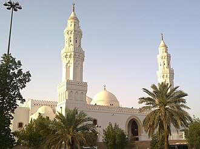

PrésentationتقديمOverview
La mosquée Al Qiblatain, en arabe : مسجد القبلتین, est une mosquée, située à Médine. La mosquée originale aurait été construite en 623, soit l'une des trois plus vieilles mosquées avec la mosquée du Prophète et la mosquée de Quba. Au cours d'une prière du Dhuhr, dans ce lieu, Mahomet aurait reçu l'ordre de prier vers La Mecque et non Jérusalem comme précédemment. Le lieu conserve deux qibla d'où son nom.
مسجد القبلتين، ويسمى أيضا بمسجد بني سلمة وهو مسجد يقع في الطرف الغربي من المدينة المنورة ويشتهر ببياضه الناصع
The Masjid al-Qiblatayn, also spelt Masjid al-Qiblatain, is a historic mosque in Medina, Saudi Arabia, located approximately 5 km (3.1 mi) north-west of the Prophet's Mosque.
Mescid-i Kıbleteyn (Arapça: مسجد القبلتين; (Türkçe: 'İki Kıbleli Mescid', Medine'nin kuzeybatısında Vebere Harresi denilen mevkide bulunan mescit. Tamlama, iki kıbleli mescit anlamına gelmektedir. Mescid-i Nebevî'ye 5 km uzaklıktadır. İlk adı, içinde bulunduğu bölgede yerleşik olan kabile dolayısıyla Benî Selime Mescidi'dir. Mescit, Sawad ibn Ghanam ibn Ka'ab tarafından Hicri 2. yılda yılında inşa edilmiştir.
Masjid Qiblatain adalah salah satu masjid terkenal di Madinah. Masjid ini mula-mula dikenal dengan nama Masjid Bani Salamah, karena masjid ini dibangun di atas bekas rumah Bani Salamah. Letaknya di tepi jalan menuju kampus Universitas Madinah di dekat Istana Raja ke jurusan Wadi Aqiq atau di atas sebuah bukit kecil di utara Harrah Wabrah, Madinah.
مدینہ منورہ کے محلہ بنو سلمہ میں واقع ایک مسجد جہاں 2ھ میں نماز کے دوران تحویل قبلہ کا حکم آیا اور حضرت محمد صلی اللہ علیہ و آلہ وسلم اور صحابہ کرام نے نماز کے دوران اپنا رخ بیت المقدس سے کعبے کی جانب پھیرا۔ کیونکہ ایک نماز دو مختلف قبلوں کی جانب رخ کر کے پڑھی گئی اس لیے اس مسجد کو "مسجد قبلتین"یعنی دو قبلوں والی مسجد کہا جاتا ہے۔ یہ مسجد بئر رومہ کے قریب واقع ہے۔ مسجد کا داخلی حصہ قبہ دار ہے جبکہ خارجی حصے کی محراب شمال کی طرف ہے۔ عثمانی سلطان سلیمان اعظم نے 1543ء میں اس کی تعمیر نو کرائی۔
Die Moschee der zwei Gebetsrichtungen ist eine Moschee in Medina. Die Moschee liegt im Nordosten Medinas im Vulkanfeld Harrat al-Wabara in ungefähr 5 km Entfernung von der Prophetenmoschee. Der ursprüngliche Name soll aufgrund des dort lebenden Stammes Bani-Salima-Moschee gelautet haben. Nach islamischer Überlieferung soll Mohammed hier die Offenbarung erhalten haben, die Gebetsrichtung zu ändern. Zur Zeit des Propheten Mohammed war das Gebet der Muslime zunächst nach der Stadt Jerusalem ausgerichtet. Später änderte er diese Gebetsrichtung (qibla) und man wendet sich seitdem beim Gebet in Richtung der Kaaba in Mekka, des höchsten Heiligtums des Islam. Jerusalem ist noch heute als die erste der beiden Gebetsrichtungen (ūlā l-qiblatain) bekannt.
La Mezquita de al-Qiblatayn, también escrita como Masjid al-Qiblatain, es una mezquita en Medina donde los musulmanes creen fue el sitio donde el último profeta islámico, Mahoma, recibió la orden para cambiar la alquibla de Jerusalén a La Meca. La mezquita fue construida por Sawad ibn Ghanam ibn Ka'ab durante el año 2 AH y es una de las pocas mezquitas en el mundo en haber tenido dos mihrabs en direcciones diferentes.
La moschea al-Qiblatayn, o "moschea delle due Qibla", è una moschea di Medina storicamente importante per i Musulmani, in quanto è il luogo dove secondo la tradizione il profeta Maometto ha ricevuto l'ordine da Allah di cambiare la Qibla da Gerusalemme a La Mecca.
雙朝向清真寺 是沙烏地阿拉伯第二聖地麥地那的一座清真寺，標誌了穆斯林的祈禱朝向從耶路撒冷改為麥加天房的歷史時刻。亦使清真寺有了兩個米哈拉布。
मस्जिद अल-क़िबलातैन मदीना शहर में एक मस्जिद है जो मुसलमानों के लिए ऐतिहासिक रूप से महत्वपूर्ण है जहाँ इस्लामिक नबी (पैगंबर) मुहम्मद को निर्देश मिला था की प्रार्थना की दिशा यरूशलेम से बदलकर मक्का की और कर दी जाये, एक साथी के नेतृत्व में पूरी मंडली ने प्रार्थना की दिशा बदल दी। इस प्रकार इसमें विशिष्ट रूप से दो मिहराब शामिल थे। हाल ही में, मस्जिद का जीर्णोद्धार किया गया था; यरूशलेम का सामना करने वाली पुरानी मिहराब को हटा दिया गया, और मक्का का सामना करने वाले को छोड़ दिया गया। क़िबलातयैन मस्जिद, क़ुबा मस्जिद और पैगंबर की मस्जिद, उन शुरुआती मस्जिदों में एक है जो मुहम्मद के समय से थी, यह मानते हुए कि मक्का की महान मस्जिद और यरुशलम इस्लामिक विचार में पहले के पैगम्बरों से जुड़े हैं।
Мечеть аль-Киблатайн — мечеть в городе Медина в Саудовской Аравии
Masjid al-Qiblatayn är en moské i Medina (Saudiarabien) på vars plats vissa anser att muslimer bad böner på när befallningen kom om att byta böneriktning (qibla) från Jerusalem till Mecka. Under en period i islam stod muslimerna och bad riktade mot Jerusalem istället för mot Mecka. Moskén är historiskt betydelsefull då det är den enda moskén som byggts med två motsatta bönenischer i den.
Histoires et récitsقصص ورواياتStories and accounts
Hadith authentiqueحديث صحيحAuthentic hadithSe tourner vers La Mecque en pleine prièreالتحوّل إلى الكعبة في أثناء الصلاةTurning towards Mecca in the middle of a prayer
Pendant seize ou dix-sept mois, les musulmans de Médine prièrent vers Jérusalem, puis le Coran ordonna de se tourner vers la Kaaba (sourate 2, verset 144). Un homme passa près de fidèles en pleine prière et les prévint : ils se tournèrent aussitôt vers La Mecque, sans interrompre leur prière (al-Bukhari n° 40). Selon la tradition de Médine, cela se passa dans la mosquée des Banu Salima, appelée depuis « mosquée des deux qiblas ».صلّى المسلمون في المدينة ستة عشر أو سبعة عشر شهرًا نحو بيت المقدس، ثم نزل الأمر بالتوجّه إلى الكعبة (البقرة 144). فمرّ رجل بقوم وهم يصلّون فأخبرهم، فاستداروا نحو الكعبة وهم في صلاتهم (البخاري 40). وتقول الرواية المتداولة في المدينة إن ذلك كان في مسجد بني سلمة، الذي سُمّي بعدها مسجد القبلتين.For sixteen or seventeen months, the Muslims of Medina prayed towards Jerusalem; then the Quran ordered them to turn towards the Kaaba (sura 2, verse 144). A man passed by people in the middle of their prayer and told them: they turned at once towards Mecca without breaking off their prayer (al-Bukhari no. 40). According to the tradition of Medina, this took place in the mosque of the Banu Salima, called ever since the “Mosque of the Two Qiblas”.
Source :المصدر:Source: Coran 2:144 · al-Bukhari 40
CoranالقرآنQuranLe regard tourné vers le cielتقلّب الوجه في السماءThe face turned towards the sky
Pendant les premiers mois à Médine, les musulmans priaient vers Jérusalem, mais le Prophète ﷺ espérait pouvoir prier vers la Kaaba, la maison bâtie par Abraham. Le Coran, dans la sourate 2 (al-Baqara), verset 144, décrit Dieu voyant son visage se tourner vers le ciel, et lui ordonne de tourner son visage vers la Mosquée sacrée, où qu'il soit. Les versets 142 à 150 de la même sourate parlent de ce changement de qibla et des questions qu'il souleva.في الأشهر الأولى بالمدينة كان المسلمون يصلّون إلى بيت المقدس، وكان النبي ﷺ يحب أن يتوجّه إلى الكعبة، البيت الذي بناه إبراهيم عليه السلام. ويصف القرآن في سورة البقرة، الآية 144، رؤية الله تقلّبَ وجه نبيه في السماء، ويأمره بأن يولّي وجهه شطر المسجد الحرام حيثما كان. وتتناول الآيات من 142 إلى 150 من السورة نفسها تحويل القبلة وما أثاره من أسئلة.During the first months in Medina, Muslims prayed towards Jerusalem, but the Prophet ﷺ hoped to pray towards the Kaaba, the house built by Abraham. The Quran, in Surah 2 (al-Baqara), verse 144, describes God seeing his face turning towards the sky, and commands him to turn his face towards the Sacred Mosque wherever he is. Verses 142 to 150 of the same surah deal with this change of qibla and the questions it raised.
Source :المصدر:Source: Coran 2:144 (Quran.com) · Sahih al-Bukhari 40
Hadith authentiqueحديث صحيحAuthentic hadithSeize ou dix-sept mois vers Jérusalemستة عشر أو سبعة عشر شهرًا نحو بيت المقدسSixteen or seventeen months towards Jerusalem
Le compagnon al-Bara' ibn Azib raconte qu'à son arrivée à Médine, le Prophète ﷺ pria vers Jérusalem pendant seize ou dix-sept mois. Après le changement, certains se demandèrent ce qu'il adviendrait des prières des musulmans morts avant ce jour. La réponse vint dans le Coran, sourate 2 (al-Baqara), verset 143, qui assure que Dieu ne laisse pas perdre leur foi. Hadith authentique (al-Bukhari, Muslim).روى البراء بن عازب أن النبي ﷺ لما قدم المدينة صلّى نحو بيت المقدس ستة عشر شهرًا أو سبعة عشر شهرًا. ولما حُوّلت القبلة تساءل بعض الناس عن صلاة من مات من المسلمين قبل التحويل، فنزل الجواب في سورة البقرة، الآية 143، بأن الله لا يضيع إيمانهم. والحديث صحيح رواه البخاري ومسلم.The companion al-Bara' ibn Azib relates that after arriving in Medina, the Prophet ﷺ prayed towards Jerusalem for sixteen or seventeen months. After the change, some wondered what would become of the prayers of Muslims who had died before that day. The answer came in the Quran, Surah 2 (al-Baqara), verse 143, which assures that God does not let their faith be lost. Authentic hadith (al-Bukhari, Muslim).
Source :المصدر:Source: Sahih al-Bukhari 40 · Sahih Muslim 525
Traditionرواية متداولةTraditionLe Prophète ﷺ priait-il lui-même ici ?هل كان النبي ﷺ يصلّي هنا بنفسه؟Was the Prophet ﷺ himself praying here?
La mosquée s'appelait d'abord mosquée des Banu Salima, une tribu des Ansar. Selon une tradition rapportée par Ibn Sa'd, le Prophète ﷺ y était en visite chez Umm Bishr et dirigeait la prière de midi quand l'ordre de se tourner vers la Kaaba arriva : il aurait fait la moitié de la prière vers Jérusalem et l'autre moitié vers La Mecque. Les récits authentiques de Bukhari disent plutôt qu'un compagnon apporta la nouvelle à des gens en prière. Les deux versions expliquent le nom de « mosquée des deux qiblas ».كان المسجد يُعرف أولًا بمسجد بني سلمة، وهم قبيلة من الأنصار. وتذكر رواية عند ابن سعد أن النبي ﷺ زار أم بشر في بني سلمة، فصلّى بأصحابه الظهر في هذا المسجد، فنزل الأمر بالتحويل في أثناء الصلاة، فصلّى بعضها إلى بيت المقدس وبعضها إلى الكعبة. أما الروايات الصحيحة في البخاري فتذكر أن رجلًا صلّى مع النبي ﷺ ثم مرّ بقوم وهم يصلّون فأخبرهم. وكلتا الروايتين تفسّر اسم «مسجد القبلتين».The mosque was first called the mosque of the Banu Salima, a tribe of the Ansar. According to a tradition reported by Ibn Sa'd, the Prophet ﷺ was visiting Umm Bishr there and leading the noon prayer when the order to face the Kaaba came: he is said to have prayed half the prayer towards Jerusalem and the other half towards Mecca. The authentic reports in Bukhari say instead that a companion brought the news to people at prayer. Both versions explain the name "mosque of the two qiblas".
Source :المصدر:Source: Wikipedia (Masjid al-Qiblatayn) · Sahih al-Bukhari 4486
Fait historiqueواقعة تاريخيةHistorical factDeux mihrabs, puis un seulمحرابان ثم محراب واحدTwo mihrabs, then only one
Pendant des siècles, la mosquée garda le souvenir de ses deux directions : un mihrab vers La Mecque et un ancien mihrab vers Jérusalem, au nord. Le sultan ottoman Soliman le Magnifique la fit restaurer vers 1543. Lors de sa reconstruction en 1987, sous le roi Fahd, l'ancien mihrab tourné vers Jérusalem fut retiré, pour éviter toute confusion chez les fidèles ; il n'en reste qu'un. Fait historique.ظلّ المسجد قرونًا يحتفظ بذكرى اتجاهيه: محراب نحو مكة ومحراب قديم نحو بيت المقدس في الشمال. وجدّده السلطان العثماني سليمان القانوني نحو سنة 1543م. وعند إعادة بنائه سنة 1987م في عهد الملك فهد أُزيل المحراب القديم المتجه إلى بيت المقدس حتى لا يلتبس الأمر على المصلين، فلم يبقَ إلا محراب واحد. حقيقة تاريخية.For centuries the mosque kept the memory of its two directions: a mihrab towards Mecca and an old mihrab towards Jerusalem, to the north. The Ottoman sultan Suleiman the Magnificent had it restored around 1543. When it was rebuilt in 1987 under King Fahd, the old mihrab facing Jerusalem was removed to avoid any confusion among worshippers; only one remains. Historical fact.
Source :المصدر:Source: Wikipedia (Masjid al-Qiblatayn)
Toutes les histoires des mosquéesكل قصص المساجدAll the stories of the mosques →
Sur la carteعلى الخريطةOn the map
Documents et liensوثائق وروابطDocuments and links
- Wikipédia — Français
- Wikipédia — العربية
- Wikipédia — English
- Wikipédia — Türkçe
- Wikipédia — Bahasa Indonesia
- Wikipédia — اردو
- Wikipédia — Deutsch
- Wikipédia — Español
- Wikipédia — Italiano
- Wikipédia — Nederlands
- Wikipédia — 中文
- Wikipédia — हिन्दी
- Wikipédia — Русский
- Wikipédia — Svenska
- Wikidata — Q2334553
Données : Wikidata (CC0), mises à jour tous les 3 mois. L'année est la plus ancienne date de construction connue du bâtiment : pour un édifice devenu mosquée plus tard (comme Sainte-Sophie), c'est celle du bâtiment d'origine. Photos : Wikimedia Commons, auteur et licence sur la page de chaque photo.البيانات: ويكي بيانات (CC0)، تُحدَّث كل 3 أشهر. السنة هي أقدم تاريخ معروف لبناء المبنى: فإن صار مسجدًا لاحقًا (مثل آيا صوفيا) فهي سنة المبنى الأصلي. الصور: ويكيميديا كومنز، المؤلف والرخصة في صفحة كل صورة.Data: Wikidata (CC0), updated every 3 months. The year is the earliest known construction date of the building: for a building that became a mosque later (such as Hagia Sophia), it is that of the original building. Photos: Wikimedia Commons, author and licence on each photo's page.
Grandes mosquées du mondeالجوامع الكبرى في العالمGreat mosques of the world →